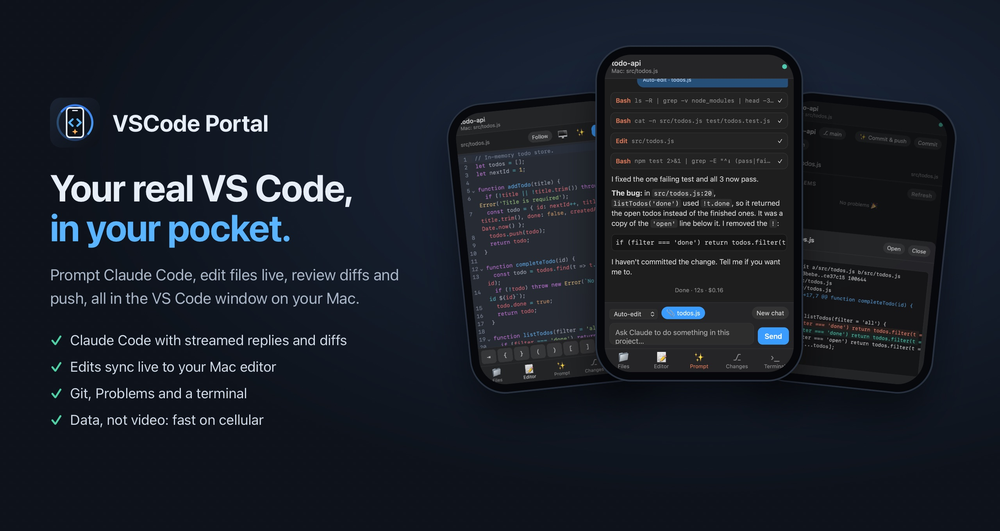
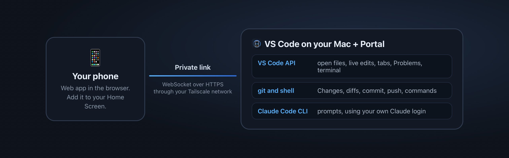

VSCode Portal
Use the VS Code window on your Mac from your iPhone. Ask Claude Code to do things, edit files live, review diffs, commit and push, and run commands. It all happens in your real project on your real machine.

Portal isn't a screen-sharing app. It sends small pieces of data (file text, diffs, chat messages) instead of streaming video, so it stays fast and sharp on cellular, and every screen is built for a phone.
Features

- ✨ Claude Code from your phone. Type a request. Claude runs in your project on the Mac, using your existing Claude login, and you watch the reply stream in. Each file edit and command shows up as a card (tap it to see the diff), followed by the time and cost. Follow-up prompts continue the same chat.
- Auto-edit: edits files and runs a short list of safe commands (git status/diff/add/commit/push, npm test/build/lint, tsc).
- Plan only: reads and plans, changes nothing.
- Full access: can run anything. The app asks you to confirm the first time.
- Tap 📎 to send along the file and selection you're looking at.
- 📝 Live editor. Browse and search the workspace and edit with syntax highlighting and a row of code symbols above the keyboard. Your edits appear in the VS Code window on your Mac as you type, and edits made on the Mac appear on your phone. Follow keeps your phone on whatever file is open on the Mac.
- ⎇ Changes. Branch, changed files and diffs, then Commit, Push, or ✨ Commit & push to have Claude write the commit message. See VS Code's Problems and tap Ask Claude to fix.
- ›_ Terminal. Run a command and see its output on your phone, or send it to the VS Code terminal on your Mac.
- Multiple windows. Each VS Code window gets its own port (7788, 7789, …), shown in the status bar.
How it works

The extension starts a small server inside VS Code. Your phone opens it in the browser through a private link on your own Tailscale network. Nothing goes through a third-party server.
Requirements
- macOS. Commands run through
zsh. Linux will probably work but hasn't been tested. Windows isn't supported yet.
- Tailscale (free) on your Mac and your phone, to reach the Mac privately from anywhere.
- For prompts: Claude Code, signed in. Portal uses the copy bundled with the Claude Code extension, or
claude on your PATH. Usage is billed to your own Claude account.
Setup
- Install VSCode Portal. A 📱 Portal :7788 item appears in the status bar.
- Share it on your tailnet. On the Mac, run:
tailscale serve --bg --https=8443 http://127.0.0.1:7788
(With the Mac App Store version of Tailscale, the command is /Applications/Tailscale.app/Contents/MacOS/Tailscale.)
- Set the address in VS Code: Settings →
vscodePortal.publicUrl → https://<your-mac>.<your-tailnet>.ts.net:8443.
- Get the link. Click Portal in the status bar → Copy Link, and open it on your iPhone. The link includes your access code.
- Optional: in Safari, tap Share → Add to Home Screen to get a full-screen app.
Security
Portal gives your phone real control of your Mac, so treat the access code like a password.
- The server listens only on
127.0.0.1 by default. Your phone reaches it through Tailscale, which is private to your devices and encrypted.
- Every connection needs the access code. It's random, stored in
~/.vscode-portal/token, and shared by all your VS Code windows. Too many wrong codes lock that address out for 15 minutes.
- The phone can only open files inside the workspace folders.
- The Terminal tab and Full access mode run commands on your Mac as you. Auto-edit mode only allows the short list of commands above.
- Don't change
vscodePortal.host to 0.0.0.0, and don't publish the port to the internet with something like tailscale funnel.
To change the code, delete ~/.vscode-portal/token (or set vscodePortal.token) and run VSCode Portal: Restart Server.
Settings
| Setting |
Default |
What it does |
vscodePortal.enabled |
true |
Start the phone server when VS Code opens. |
vscodePortal.port |
7788 |
First port to try. Other windows use the next free port. |
vscodePortal.host |
127.0.0.1 |
Address to listen on. Keep it local and use tailscale serve. |
vscodePortal.publicUrl |
|
The address your phone uses, e.g. https://my-mac.tail1234.ts.net:8443. |
vscodePortal.token |
|
Your own access code. Leave empty to use a generated one. |
vscodePortal.claudePath |
|
Path to the claude CLI. Leave empty to find it automatically. |
Commands
- VSCode Portal: Show Phone Link: copy or open the link for this window (same as clicking the status bar item).
- VSCode Portal: Restart Server: restart after changing settings or the access code.
Troubleshooting
- Status bar says "Portal off". Another app is using the port. Hover over the status bar item for the reason, or change
vscodePortal.port.
- "Claude Code not found". Install the Claude Code extension or CLI, or set
vscodePortal.claudePath.
- Phone can't connect. Check that Tailscale is on on both devices, that
tailscale serve points at the port shown in the status bar, and that publicUrl matches.
VSCode Portal is an independent project. It isn't affiliated with or endorsed by Microsoft or Anthropic. Visual Studio Code is a trademark of Microsoft Corporation. Claude and Claude Code are trademarks of Anthropic.